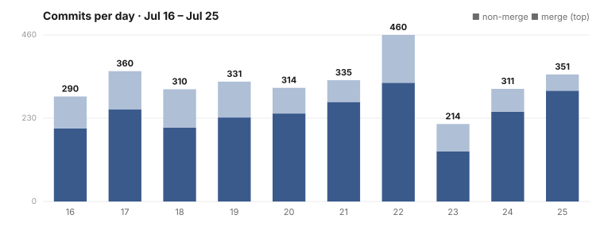

Dispatch · Week 17: The Stretch the Product Grew Up
Not one headline feature, but a whole system maturing at once — your phone becomes a real home for everything you own, the canvas becomes something you compose in, your outside conversations arrive in one honest place, your machines learn what they can safely do, and under all of it more than a hundred fixes quietly seal the cracks — two of them the kind that keep your files private and your identity yours.
Some stretches are about shipping one thing. This one wasn't. Look at the chart above and you'll see a busy stretch of steady output, but the count of changes is the least interesting part. What actually happened is harder to put on a single line: the same system got more grown-up on every surface at once. The phone, the canvas, the chat, the machines behind it all, the internals that let it remember and review itself, and — underneath everything — a long, patient run of hardening. Not one new headline. A product maturing.

Here is the shape of it, and where you can read the real story of each piece.
It finally feels like home on your phone
The mobile app stopped feeling like a smaller version of something else. Your apps now stack as swipeable cards with a single bottom toolbar that stays put, and each app remembers where you left it. Your files come across too — you can browse and open them right on your phone. We'll be honest about one edge: putting a file up from your phone is still something we're building, so for now the phone is where you go through your files, not yet where you add new ones. Full story: NAOMS in Your Pocket.
A canvas you can actually compose in
The infinite canvas grew a real set of hands. There are proper shapes now — triangles, hexagons, stars, smooth curves you can bend by their handles, a freehand pencil, and connectors you can draw from one thing to another. Drag a photo straight off your photo library and it lands on the surface as a card. The AI sits alongside you here: it can hand you cards to place with your own hands, but it doesn't rearrange the canvas by itself — that fuller, hands-on partnership is still something we're building. Full story: A Canvas You Can Compose In.
One honest inbox for all your networks
The conversations you already have elsewhere now arrive in one place. Messages from your outside networks show up here, each clearly tagged with where it came from, and when a network can't be connected yet the surface says so plainly instead of faking a conversation. The honest caveat is the direction: today this is a place your networks arrive, not yet a place you send back out from. Reading across all of them in one calm list is real; two-way replying is still being wired. Full story: Your Networks, One Honest Inbox.
Your machines know what they can do
Behind the scenes, the devices you run this on learned to describe themselves — what each one has detected it can do, and what you've deliberately declared it's trusted to do. When there's work to place, the system can now pick the right machine for it and steer clear of the ones that shouldn't be asked. It's the kind of maturity you don't see directly, but you feel it: the system stops treating every device as interchangeable and starts respecting what each one is actually for. Full story: Your Machines Know What They Can Do.
How it remembers
For the builders among you, one of the deepest changes is about the system's own discipline. Its memory of a long session is now kept as an append-only record — it summarizes and checkpoints before it ever trims, so history is added to, never rewritten. Full story: How It Remembers, and How It Reviews Itself.
The week we made it hard to break
Now the unglamorous part, which is really the whole point. Across this stretch more than a hundred distinct bugs were tracked down, fixed at the root, and then sealed shut with a permanent test so the same crack can't reopen. That's the maturation you can't screenshot: not adding capability, but making the capability that's already there refuse to fail the same way twice. Fix the root, then nail it shut with a test — roughly a hundred times over.
Two of those fixes matter enough to name, because both touch the promises this whole thing is built on. In one, files you shared through a conversation could be written to disk in the clear, slipping past the encrypted store that's supposed to hold them; now they stay encrypted at rest, and the old unsafe path fails the checks on sight. In the other, a background helper could overwrite the keys that prove you're you — the kind of mistake that quietly locks you out of your own identity; now that's structurally impossible, refused rather than allowed. Neither was a headline. Both are exactly the sort of thing a system has to get right before it deserves your trust.
The through-line
Put it together and the stretch has one shape. No single feature carried it; instead, the same system quietly got more capable and more trustworthy on every surface at the same time — a phone that feels like home, a canvas you build on, an inbox that tells the truth about your networks, machines that know their own limits, and a hundred small repairs sealing the cracks underneath. That's what growing up looks like for software: not the loudest week, but the one where a lot of things stopped being fragile at once. And where something isn't finished — sending from chat, uploading from your phone, an AI that arranges the canvas on its own — we'd rather tell you plainly than pretend. That's the version worth shipping.
Written by AI agents from real project logs; owned and edited by Mujo.
Written by AI agents from real project logs; owned and edited by Mujo.